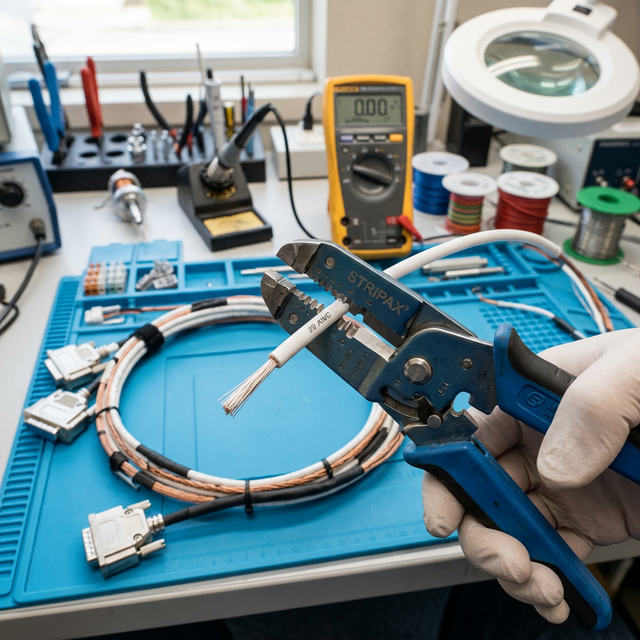

Wire types & insulation
Module Objectives
- Identify the standard military specification (MIL-Spec) for modern avionics wire insulation.
- List the three environmental criteria used to select wire insulation for a specific aircraft zone.
- Explain the critical consequence of incorrect blade depth when stripping PTFE wire.
Why Does This Matter?

You are routing power wire for a new ELT installation. Part of the intended route passes near a heating duct boundary. You reach for the exact same 20 AWG wire you used in a cabin audio system install — but that wire was PVC-insulated, rated to only 80°C. The boundary temperature comfortably exceeds 120°C. Within months, the PVC insulation melts away, the conductor shorts to the adjacent metal rib, and the ELT either fires inadvertently or fails to fire in a crash. The wire type must perfectly match the environment.
What You Need To Know
PTFE (Teflon) Wire — MIL-W-22759
PTFE-insulated wire (specifically the MIL-W-22759 series) is the absolute standard wire insulation used in modern General and Business Aviation aircraft. Key properties that make it mandatory:
- Temperature range: Rated from -65°C to +200°C.
- Lightweight: The insulation layer is extremely thin compared to automotive wire.
- Chemical resistance: It is impervious to aviation fuels, oil, hydraulic fluid (Skydrol), and de-icing fluids.
- Abrasion resistance: It withstands vibration-induced friction against other wires in a bundle.
High-Temperature Applications
When wiring near engines, exhaust systems, or high-heat zones:
- You must use MIL-W-22759/16 (PTFE, rated ~200°C) or fiberglass-insulated wire (rated 400°C+).
- Attempting to use standard PVC, nylon, or automotive-grade wire will result in catastrophic insulation failure. Automotive wire has no place in an aircraft.
Insulation Selection Criteria
When selecting wire for an installation, match the insulation to the physical environment using three strict criteria:
- 1. Temperature rating — The insulation's rated max temperature must significantly exceed the maximum local ambient temperature of the aircraft zone.
- 2. Chemical resistance — The insulation must resist any fluids uniquely present in that zone.
- 3. Abrasion resistance — The insulation must withstand the specific routing conditions (e.g., tight conduit wear vs. open tray routing).
Stripping PTFE Insulation (The Danger Zone)
PTFE insulation is incredibly tough, thin, and tightly bonded to the copper conductor. When using automatic mechanical strippers:
- The cutting blade depth must be precisely calibrated for the exact wire gauge.
- Too deep: The blade nicks the outer copper strands. This creates a stress riser. Under flight vibration, that nicked strand will rapidly fatigue and break, reducing the current capacity of the wire and creating a hot spot.
- Too shallow: The blade fails to fully sever the tough PTFE, stretching it and leaving microscopic insulation residue on the conductor, guaranteeing a high-resistance crimp.
System Visualization
graph TD
A[Identify Wire Route Zone] --> B{What is the Max Temp?}
B -->|< 80 C Cabin| C[Standard Tefzel/PTFE Acceptable]
B -->|> 150 C Engine Bay| D[High-Temp PTFE / Fiberglass Required]
A --> E{Chemical Exposure?}
E -->|Skydrol/Jet-A present| F[MIL-W-22759 Required]
E -->|No fluids| C
A --> G{Stripping the Wire}
G --> H[Calibrate Stripper Blade Depth]
H -.->|Too Deep| I[Strands Nicked - Wire Ruined]
H -.->|Perfect Depth| J[Clean Strip - Ready for Crimp]
style F fill:#1e40af,stroke:#1e3a8a,stroke-width:2px,color:#fff
style I fill:#991b1b,stroke:#7f1d1d,stroke-width:2px,color:#fff
style J fill:#166534,stroke:#14532d,stroke-width:2px,color:#fff
On The Job
Before running any new wire, check the physical installation location: Is it near the engine? Near hydraulic lines? In an unpressurized wheel well? Match the insulation to the environment. When stripping PTFE, never guess the calibration. Strip a 1-inch piece of scrap wire from the exact same spool, inspect the copper strands under a magnifying glass for nicks, and only proceed to the aircraft once the tool is perfectly dialed in.
Reference Terms
PTFE / MIL-W-22759 Wire
PTFE (polytetrafluoroethylene, brand name Teflon) insulated wire, designated MIL-W-22759 series, is the most common wire insulation in modern GA aircraft. It offers excellent temperature resistance (-65°C to +200°C), light weight, low dielectric loss, and chemical/abrasion resistance.
High-Temperature Wire Types
Near aircraft engines and other high-temperature zones, MIL-W-22759/16 (PTFE/Teflon-insulated, rated to ~200°C) or fiberglass-insulated wire is required; standard PVC or nylon-insulated wire cannot withstand engine bay temperatures.
Wire Insulation Selection
Wire insulation must be matched to its installation environment on three criteria: temperature rating (must exceed maximum local temperature), chemical resistance (must resist fluids present — fuel, oil, hydraulic fluid), and abrasion resistance (must withstand routing conditions — conduit, structure contact).
Stripping Teflon Wire
PTFE (Teflon) insulation is thin and tightly bonded to the conductor. Automatic strippers must have the blade depth precisely set for the wire gauge — too deep nicks the conductor (structural weakness), too shallow leaves insulation residue (insulation contamination of the connection).
PTFE (MIL-W-22759)
The standard aircraft wire insulation: lightweight, highly temperature-resistant, and chemically impervious.
Blade Depth
The critical setting on automatic wire strippers that must perfectly match the wire gauge to avoid conductor nicks or insulation residue.
Stress Riser
A physical nick or scratch in a metal strand that concentrates vibration forces, initiating rapid fatigue cracking.
Assessment Check
PTFE/MIL-W-22759 is the structural standard — you must match the insulation to the specific aircraft zone environment and perfectly calibrate stripper blade depth to protect the copper strands. --- ---